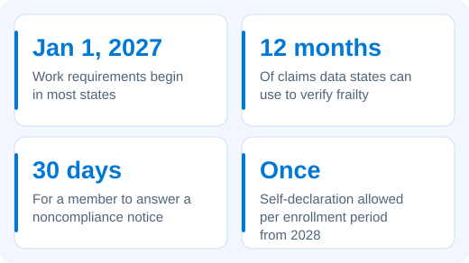
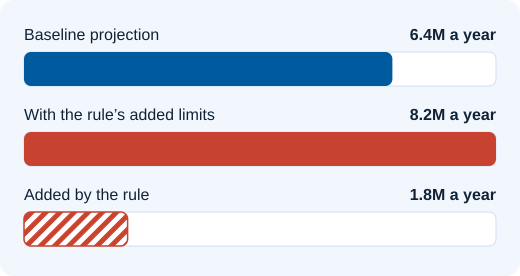

Where Frail Members Get Missed
Written for state eligibility and policy teams, and for the vendors who build their systems.

From January 1, 2027, most states will require adults covered through Medicaid expansion to work, study or volunteer 80 hours a month to keep their coverage. People who are medically frail are exempt, but only if the state recognises them as frail. To do that, the state has to spot their condition in medical claims data, and most eligibility systems were built to check income and household size, not health records. When the system misses someone, a person too sick to work gets a notice asking them to prove their hours, and can lose coverage if they don't respond within 30 days.
The definition itself has just changed. On October 29, 2026, a federal court struck down part of it, so frailty logic built over the summer may already need rework.
What Was At Stake

Projected by Manatt Health on July 16, 2026, before the October 29 ruling removed part of the rule. The figures cover all of the rule's provisions, not frailty alone.